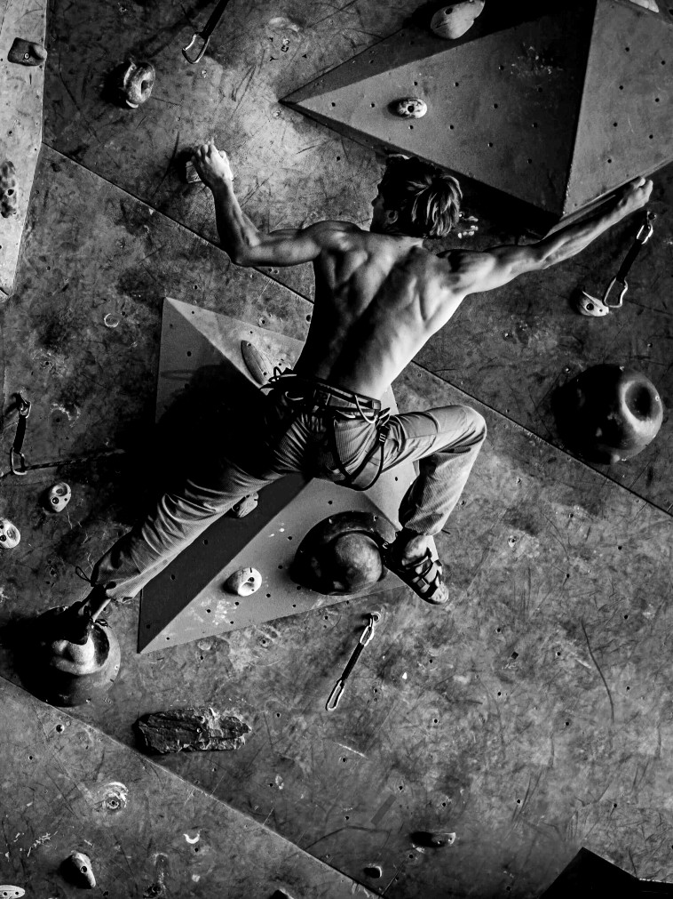
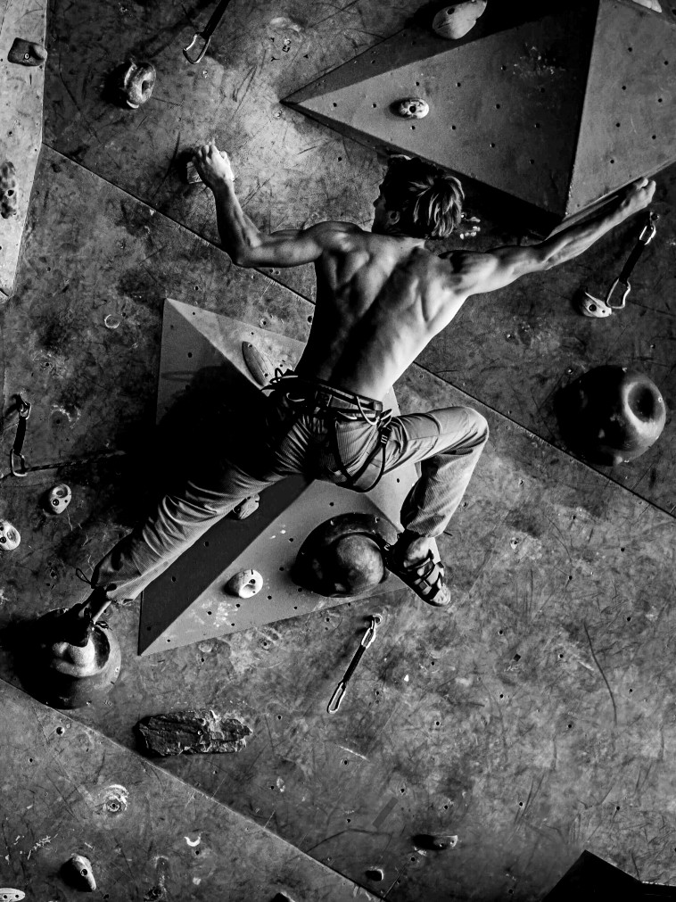

Dublin's premier source for world-class rock climbing
Welcome to Chalk, Dublin's premier indoor climbing gym. Experience the thrill of adventure and fitness in our state-of-the-art facility. Whether you're a beginner or an experienced climber, our meticulously designed walls offer diverse challenges for all skill levels.
Our knowledgeable instructors are here to guide you in bouldering, top-rope climbing, and lead climbing. At Chalk, we foster a welcoming community where climbers connect, learn, and inspire one another through workshops, competitions, and social events. Join us in the heart of Dublin for an unforgettable indoor climbing experience that combines adventure, fitness, and a vibrant community.
Our cutting-edge facility features the latest advancements in climbing wall technology, ensuring a safe and enjoyable experience for climbers of all levels. With state-of-the-art equipment and meticulously maintained routes, Chalk provides a dynamic and ever-changing environment that keeps climbers engaged and challenged.